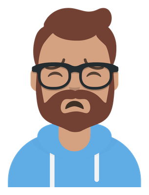

University of Maryland, Baltimore County - College of Engineering and Information Technology's Shared Services Center Website Redesign
PROJECT INFORMATION
- Categories: User Research, Website Redesign User-Centered Design
- User Base: Students, Faculty, General Audience
- Project Timeline:
- Team Members: Finance Specialists, Web Developers, Business Associates
- My Role: User Researcher and Web developer
The COEIT SSC website suffered from decreased audience because of usability and content structure related issues. Through thorough user research, we aim to change the existing structure of the website to improve the number of people visiting the website.
Egen's dilemma

Egen, is a one of the specialists at the University of Maryland, Baltimore County (Abbv UMBC)'s College of Engineering and Information technology's (Abbv COEIT) Shared Services Center (Abbv SSC)
Egen outlined a few problems when it came to the COEIT SSC Website.To alleviate those problems,he wants to restructure the website so that it leads to improved audience numbers. This led to him appointing me as both a user researcher and web developer.